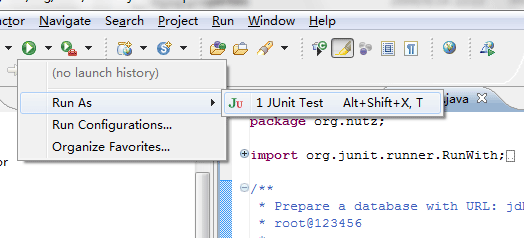

搭建 Eclipse 编译环境
如果你对于 Eclipse 以及 SVN 不是特别熟悉，请参看 从 SVN 编译。如果你认为自己有足够的经验，你需要知道一下几点就能顺利编译：
- SVN 的 check out 信息在 http://code.google.com/p/nutz/source/checkout
- 如果你只想阅读最新代码，从这里检出：http://nutz.googlecode.com/svn/trunk
- 如果你想提交代码，从这里检出： https://nutz.googlecode.com/svn/trunk （当然你得有提交权限）
- 项目编译依赖
- log4j 用来编译 Nutz.log，在运行时，则不是必须的。关于 Nutz.log 更多介绍，请参看这里
- commons-dbcp 和 commons-pool 是运行 Junit 测试所必须的。并且你还需要一个 JDBC 驱动
- Servlet API 的支持
- JUnit 4
- 在编译前，请确定你的项目是用 UTF-8 方式编码的。因为我的源码以及文档用的都是 UTF-8 格式的文件
你可以参看 从 SVN 编译，这是我们推荐的项目构建和编译方式。
如何运行 JUnit 测试
那么如何运行 JUnit 测试呢？
1. 创建测试数据库
首先你需要建立一个测试数据库，比如，我们叫 zzhtest. 建议不要使用test.
mysql:> create database zzhtest;
2. 创建连接配置文件
在 Eclipse 项目里，增加一个新的 source folder ：右击项目 > New > Source Folder
- 随便给这个 Folder 起个名字，比如 properties
- 将这个目录设置成为 Source Folder
- 然后在里面创建一个文本文件 nutz-test.properties
- 请注意，一定要叫这个名字，否则运行测试一定是不过的，详细原因请看 /test/org/nutz/Nutzs.java 的源代码
这个文件的正文为：
driver=com.mysql.jdbc.Driver url=jdbc:mysql://127.0.0.1:3306/zzhtest username=root password=123456
一共四行。当然，不用我说，大家一定知道怎么修改吧,建立好文件的项目结构为：
请注意，= 前后不要有空格
我之所以这样做而不直接把 nutz-test.properties 文件放到 src 或者 test 下面，是因为，这个文件通常在不同的机器上时不一样的，我家，公司，以及笔记本上的 nutz-properties 都不一样。所以，不宜将这个文件放到 svn 上。
3. 增加 log4j.properties
这步，是为了能让你在控制台上打印 Nutz 内部的运行信息：
在刚才创建的 Source Folder 下创建一个 log4j.properties 文件，正文为：
log4j.category.org.nutz=debug, NUTZ log4j.additivity.org.nutz=false #Appenders ... log4j.appender.NUTZ=org.apache.log4j.ConsoleAppender log4j.appender.NUTZ.layout=org.apache.log4j.PatternLayout log4j.appender.NUTZ.layout.ConversionPattern=%d [%t] %-5p %c - %m%n
4. 检查
你的项目应该看起来是这个样子：

5. 增加 Jetty 的依赖
因为 Nutz 的 Mvc 自动测试，适用嵌入式Servlet容器 Jetty，因此你需要下一个最新的版本并加入你的 Eclipse 工程的类路径中
我用的是 'jetty-all-7.4.1.v20110513.jar' 这个版本，我想只要你的版本比我这个新，应该都能兼容。对于不熟悉 Jetty 的朋友，一开始，能找它的下载地址都要费半天劲，让我替你省点事，直接从这个地址:http://repo2.maven.org/maven2/org/eclipse/jetty/aggregate/jetty-all/ 下载就好了。
另外请注意: - 可能 Jetty 同 Tomcat 有点冲突，你把它们一起放在你的工程里是不明智的，前面的文章曾提示你将Tomcat 加入你的类路径，仅仅是为了编译，因为 Nutz 需要 Tomcat 中的 servlet-api.jar， 如果你现在下了 Jetty，你就不需要Tomcat 了，再把 Jetty 给你提供的，或者随便谁提供的 servlet-api.jar 加入你的类路径就好了。
6. 运行
之后，打开 test/org/nutz/TestAll.java ，然后用 JUnit 运行

7. 查看结果
如果上述操作没出什么岔子，那么你会看到正确的运行结果：

最后 ...
- Nutz 是开源项目，你可以修改源代码，并运行JUnit 测试，来验证你的修改会不会导致错误
- 你还可以增加 JUnit 测试，来看看 Nutz 的代码品质到底如何
- 当然，如果你写的 JUnit 测出了 Nutz 的 bug，或者修正了Nutz代码的缺陷， 请发信到这个地址 nutzam@googlegroups.com ,并附上你的代码。
- 我们会非常感谢你的付出。如果你提出的修改超过 5 次（包含）被接受，你会收到一封邀请信，邀请你成为 Nutz 的 Commiter
- 关于如何成为 Nutz 的 Commiter，请 参看这里
还有：
- 在 build 目录下，有 build.xml， 你可以用 Ant 编译
- 如果你建立一个基于 Nutz 的项目，将 Nutz 的 jar 包 加入到项目的build path 即可